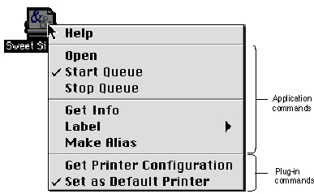

Contextual Menus
Contextual menus are a new feature of the Mac OS. Pressing the Control key while clicking on an item displays a pop-up menu which you can use as a convenient shortcut to provide contextual help or activate often-used commands associated with that item. (The contextual menu may also be invoked by clicking on an item with the right button on a two-button mouse.)Figure 4-3 shows an example of a contextual menu invoked by Control-clicking a desktop printer.
- IMPORTANT
- Contextual menus should never supersede menu bar items; there shouldn't be any items in a contextual menu which are not also accessible through the menu bar.

The contextual menu appears with its upper left corner offset one pixel to the right and one pixel down from the click location. If the menu is too wide to be fully displayed in the default position, it will appear with the upper right corner offset one pixel to the left and one pixel down from the click location. This positioning reverses on right-to-left oriented systems, with the latter position becoming the default and shifting to the former when required. Menus which are too long to be fully displayed exhibit the scrolling triangle and scroll as normal menus.
A contextual menu behaves as a standard sticky menu, except that moving the cursor off the contextual menu onto a standard menu does not activate the second menu. The user must explicitly click on the second menu to close the contextual menu and open the second menu.
The first item in a contextual menu is always a Help item. It should open the appropriate Apple Guide access window with a relevant keyword already loaded in the Look For view. If no help file is available, the Help item will be disabled, but the item is always displayed.
Any subsequent items in the contextual menu are defined by you. The list of items should comprise a small subset of the most commonly used commands in the application context which produced the menu. In Figure 4-3, seven common desktop printing commands are listed in the contextual menu, separated by dividers into functional groups. You should never place a command in a contextual menu which is disabled in or cannot be chosen from another menu in the application.
If you do not define specific items for a contextual menu, it will display a Help item and load any appropriate plug-ins.
Note that you should not set a default item. If the user opens the menu and closes it without explicitly selecting an item, no action should occur.
Keep the list of items in a contextual menu short, clear, and simple. Use sub-menus reluctantly and keep them to one level. Adding unnecessary complications reduces the convenience of contextual menus for both you and the user.